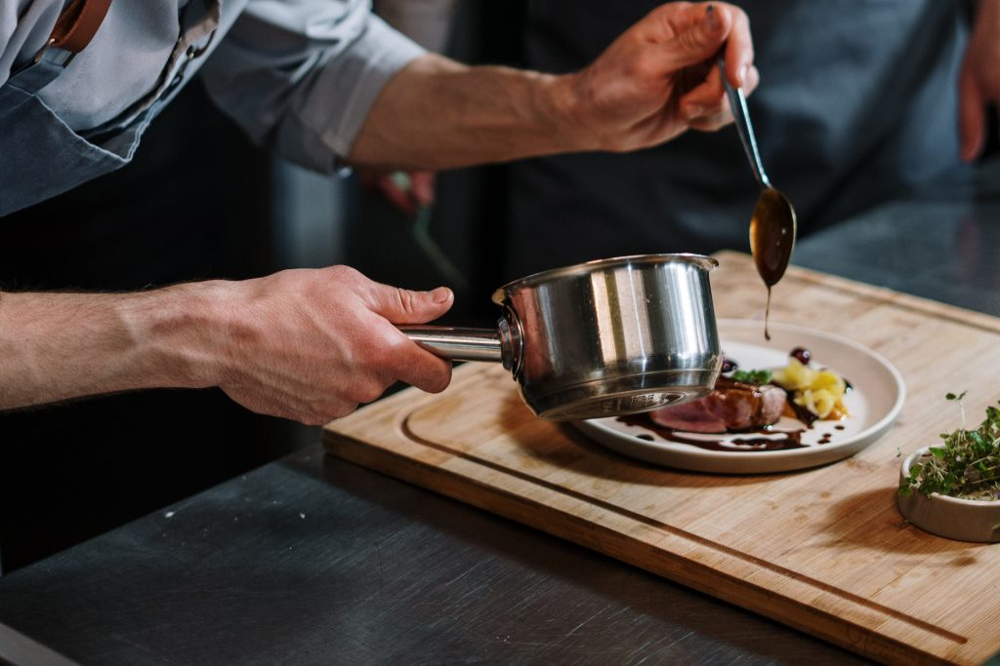

Assessorem, gestionem i creem experiències gastronòmiques.
Per a restaurants, bars i cafeteries que necessiten un canvi real
L’app que fan servir els restaurants que de veritat volen guanyar diners
Esdeveniments gastronòmics que no et deixaran indiferent